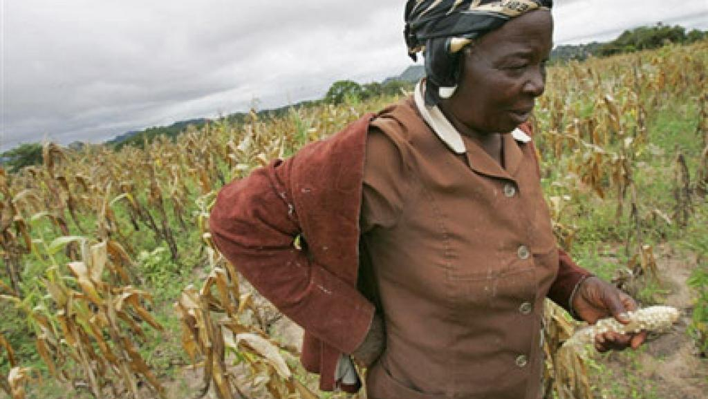
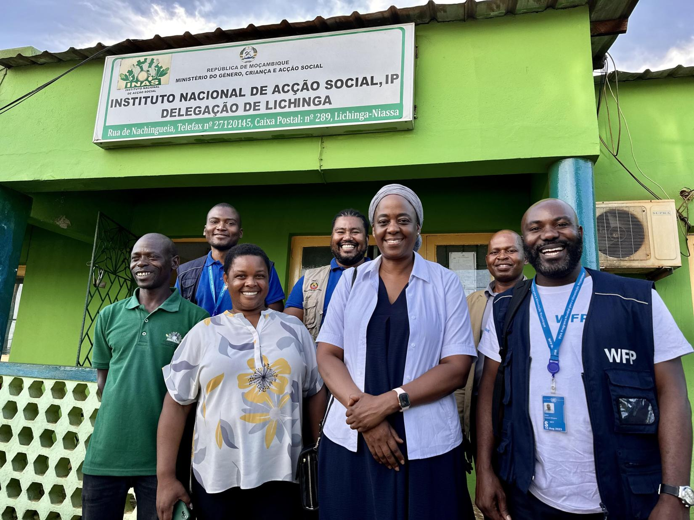

28/08/2020, 11:33. Sofala, Beira
COVID-19 condiciona distribuição de subsídio às vítimas do Idai na Beira...
02/02/2024, 10:01. Inhambane, Maxixe
PR inaugura edifício do Instituto Nacional de Acção Social da Maxixe...
28/08/2020
COVID-19 condiciona distribuição de subsídio às vítimas do Idai na Beira
28/08/2020, 08:10. Maputo, Maputo
INAS acolhe idosos vulneráveis em Catembe...
12/01/2022, 12:30. Cabo Delgado, Palma
Moçambique com mecanismo de apoio a grupos vulneráveis...
08/08/2023, 12:31. Zambezia, Nicoadala
Quarenta Mil Crianças Vão Receber Subsídio Social Básico Para Combater Desnutrição...

28/08/2020, 8:10. Sofala, Caia
Subsídio do INAS para mais de mil famílias afectadas pela seca em Caia
28/06/2020, 11:50. Maputo, Maputo
Ministra do Género nega que houve desvio de fundos da COVID-19...

28/06/2020, 11:50. Niassa, Lichinga
Em Niassa, sem deixar ninguém para trás...